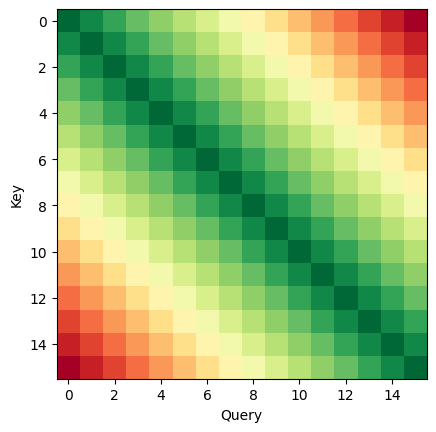
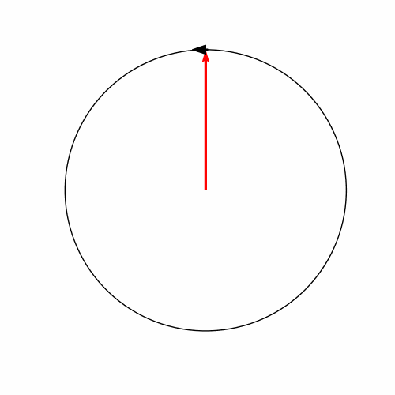
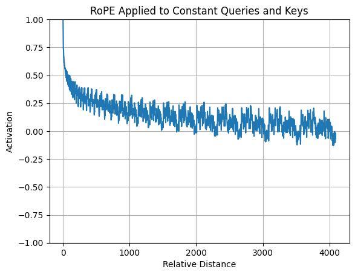
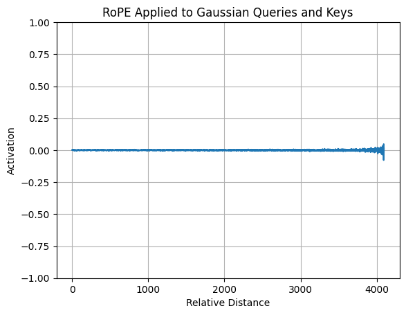
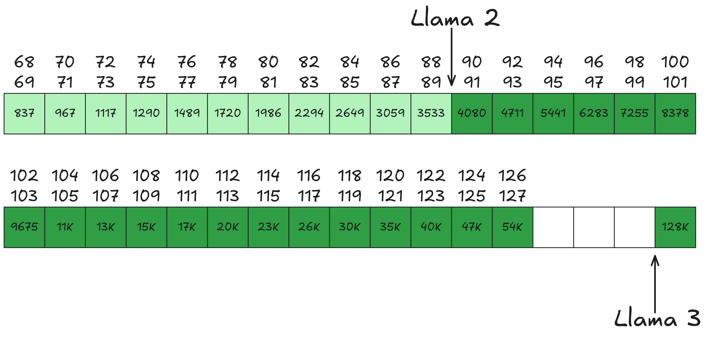
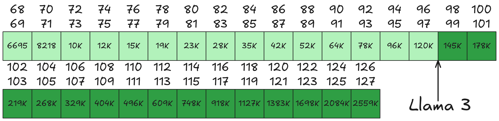

1 A Simple Rotation
RoPE is a rotation of each token given it’s positional index \(m\) multiplied by frequency \(\theta\). For the 2D case with vector \(x\) at position \(m\) vector, the following rotation is performed: \[ \text{RoPE}(x_m) = \left[ \begin{array}{cc} \cos m\theta & -\sin m\theta \\ \sin m\theta & \cos m\theta \end{array} \right] \left[ \begin{array}{cc} x^1_m \\ x^2_m \end{array} \right] \] We rotate both queries \(q_m\) and keys \(k_n\) in an attempt to add the relative distance between positions \(m\) and \(n\).
The overarching intuition here should be that if query \(q_m\) rotates away from key \(k_n\) (as \(|m - n|\) gets larger), the resulting attention score should decay further1. This turns out to be slightly misleading but it is still the core idea that RoPE presents.
1 Something like the following figure, where green means ‘high activation’ and red means ‘low activation’. 
As we add more dimensions to \(x_m\), we simply rotate successive dimensions of 2. Taking advantage of this fact, we can change the frequency value \(\theta\) to be unique for each pair of dims:
\[ \small{ \text{RoPE}(x_m) = \begin{pmatrix} \cos m\theta_1 & -\sin m\theta_1 & 0 & 0 & \cdots & 0 & 0 \\ \sin m\theta_1 & \cos m\theta_1 & 0 & 0 & \cdots & 0 & 0 \\ 0 & 0 & \cos m\theta_2 & -\sin m\theta_2 & \cdots & 0 & 0 \\ 0 & 0 & \sin m\theta_2 & \cos m\theta_2 & \cdots & 0 & 0 \\ \vdots & \vdots & \vdots & \vdots & \ddots & \vdots & \vdots \\ 0 & 0 & 0 & 0 & \cdots & \cos m\theta_{d/2} & -\sin m\theta_{d/2} \\ 0 & 0 & 0 & 0 & \cdots & \sin m\theta_{d/2} & \cos m\theta_{d/2} \\ \end{pmatrix} \left[ \begin{array}{cc} x^1_m \\ x^2_m \\ x^3_m \\ x^4_m \\ \ldots \\ x^{d-1}_m \\ x^d_m \end{array} \right] } \]
2 Frequency and Token Rotation
The Frequency here governs how fast a token rotates. We start with very fast rotating dimensions and taper it off quickly to increasingly slower rotating dimensions.
The following table represents the frequency at which several dimensions rotate if we use the Llama 2 70B config.
| dim = 0 | dim = 16 | dim = 32 | dim = 48 |
|---|---|---|---|
|  | |||
| ~ 6 steps per revolution | ~ 63 steps per revolution | ~ 628 steps per revolution | ~ 6283 steps per revolution |
Earlier dimensions rotate much faster at high frequency values. Looking at the first dimension, it rotates at 6 steps per revolution - this would indicate a high dot product for \(n = m * 6\) positions. I’m guessing the idea here is that it would transfer short-term information to the attention scores.
Later dimensions, and actually it happens quite soon, rotate at much lower frequency values. These should probably encode long-context information. It is noticeable that most of the rotations are quite slow. The last dimension requires 50K steps for a full rotation, where Llama 2 only has a context length of 4K.
3 Decaying Effect of RoPE
In the original work it was argued that if we take the same unit-length vectors as keys and queries, and calculate the distance \(m - n\) in attention scores, we notice that RoPE has a decaying effect on average. From the RoFormer paper:
This property coincides with the intuition that a pair of tokens with a long relative distance should have less connection.
This is more or less what we intuited at the start of this post. But it is also a highly specific case: when are keys and queries ever that aligned? In Barbero et al’s analysis on RoPE they take a more typical approach: queries and keys that are Gaussian. The table below shows the effect of both constant and gaussian vectors on the attention scores:
| Constant Queries, Keys | Gaussian Queries, Keys |
|---|---|
|  |  |
We see that the log-term decay is not gauranted and in this case even absent. Barbero et al’s analysis continues and shows that the frequencies are used as follows:
Low Frequencies. Most of RoPE useage (for Gemma 7B) occurs at low, slow-rotating frequencies. Since the dot product is least impacted here (most keys and queries are thus far apart that the dot product is similar)
High frequencies.
4 Improvements
4.1 Context Length
We discussed earlier that the slowest rotation takes about 50K steps per revolution. This might be fine for a context length of 4K, but the Llama 3 series extends the context length up to 128K. Let’s see visually what effect this might have:

Llama 2 and 3 both have a head dimension of 128. With a base wavelength of 10K, this is sufficient for Llama 2’s 4K context length, allowing ample dimensions for long rotations. However, for Llama 3’s 128K context length, no dimension exceeds this step level for a full rotation. Consequently, every token will rotate to a different token, reducing degrees of freedom.
To remedy this, several papers proposed to simply increase the base wavelength from 10K to 500K, resulting in the following figure:

That’s a very noticeable difference, and leaves it almost with the same dims left as Llama 2 had for 4K - I’m guessing that is not a coincidence.